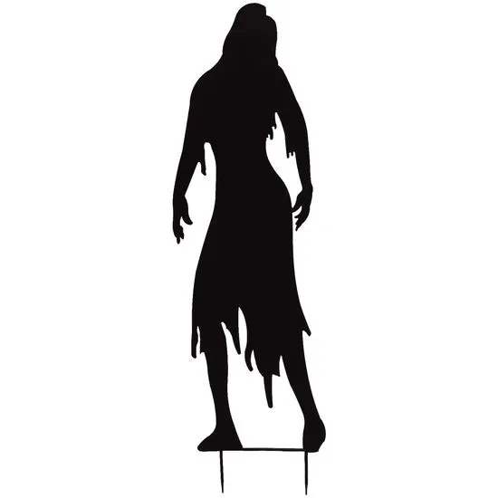
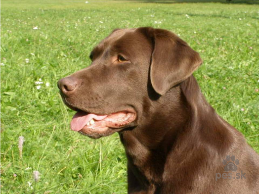

Úvod
Každá kniha je malý poklad. Když se začteme, přeneseme se v časoprostoru do alternativních světů. Co se však děje s knihami, které už jejich majitel nečte? Náš obchod nabízí darované knihy z druhé ruky, které nového vlastníka zaručeně potěší. Tímto způsobem pomáháme také životnímu prostředí, jelikož omezujeme spotřebu nově tištěných knih. Kniha není na jedno použití, a díky nám se jim dostává dalších životů a novým čtenářům dalšího požitku.
O nás
Gandalf
Hlavní sběratel knih. A výpomocný knikovník

Bara
Hlavní knihovnice no.1

Nela
Hlavní knihovnice no.2

Pes
Mentální a Psychická podpora